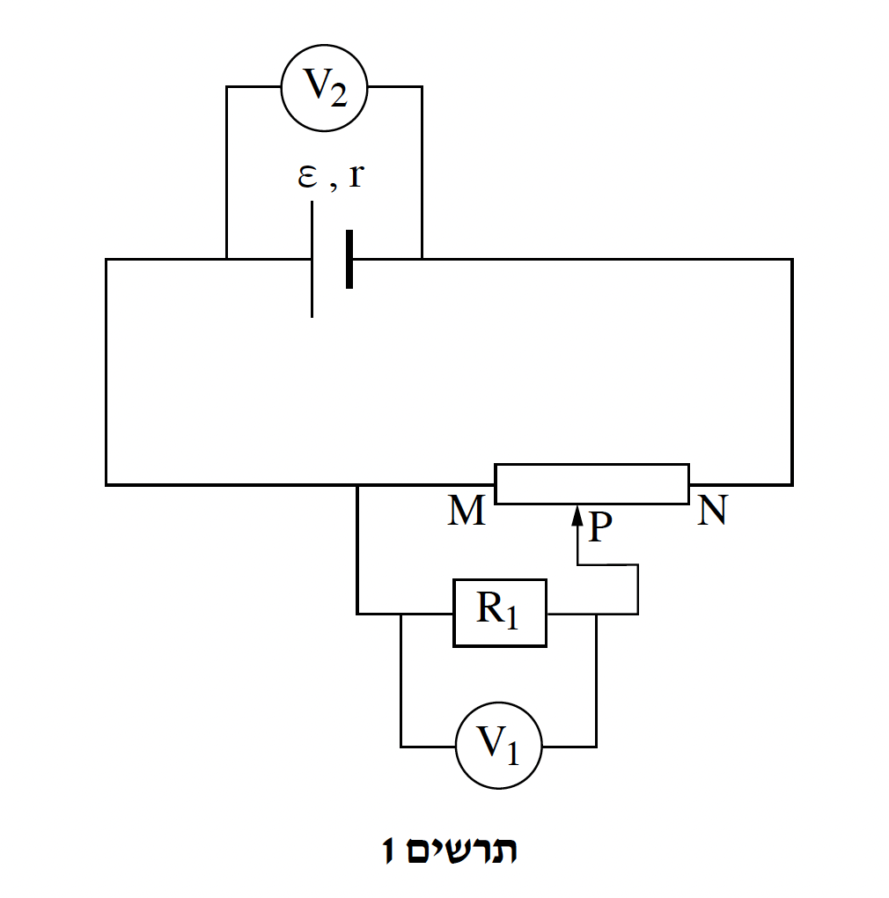
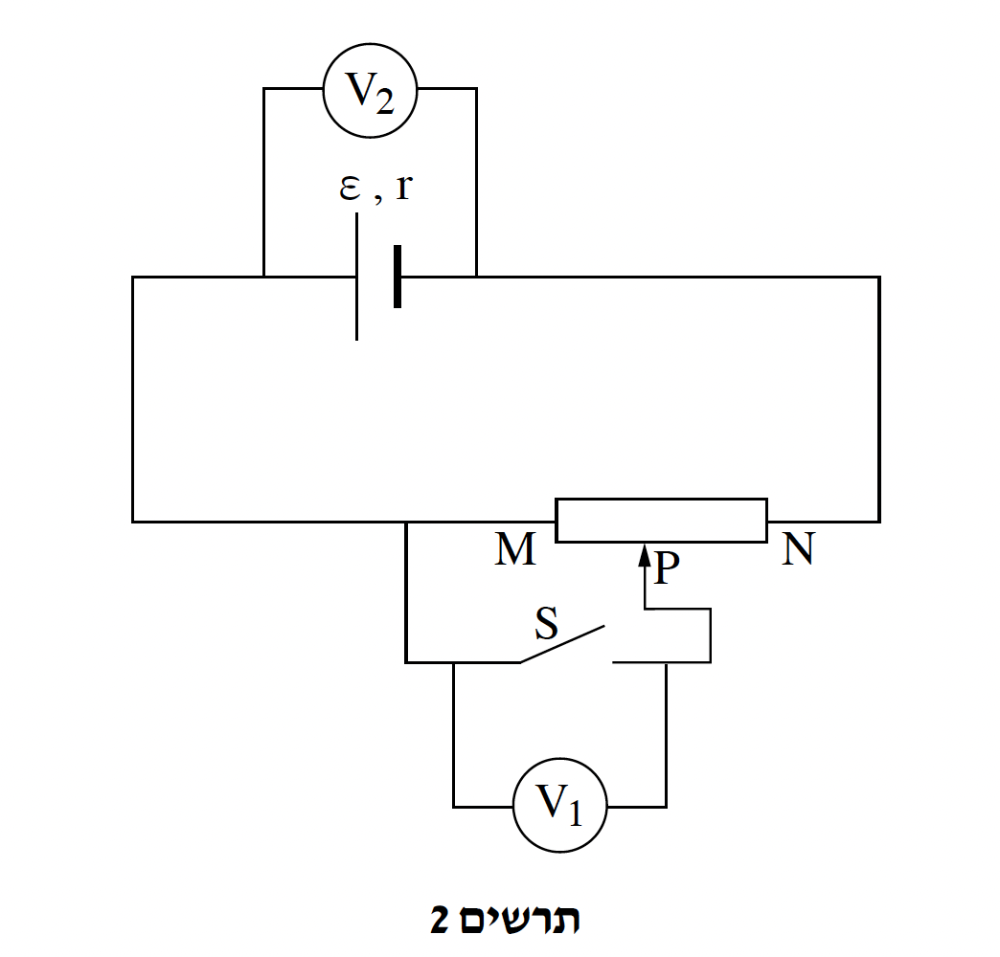

שאלה 2
תלמידים ביצעו ניסויים במעגל חשמלי. הרכיבים שעמדו לרשותם הם אלה:
- מקור מתח בעל כא"מ ε = 20V והתנגדות פנימית r = 2Ω.
- נגד שהתנגדותו R1.
- שני מדי מתח אידיאליים.
- תילים מוליכים בעלי התנגדות זניחה.
- נגד משתנה MN עם מגע נייד P.
התלמידים חיברו את הנגד R1 למקור המתח. הם מדדו את מתח ההדקים של מקור המתח באמצעות אחד ממדי המתח.
הוריית מד המתח הייתה 16V.
סרטטו תרשים של המעגל שהרכיבו התלמידים.
חשבו את ההתנגדות R1.
(7 נקודות)

בניסוי נוסף, הרכיבו התלמידים את המעגל המתואר בתרשים 1.
התלמידים הציבו את המגע הנייד P בדיוק באמצע הנגד המשתנה MN, והתבוננו בהוריות מדי המתח V1 ו־V2.
קבעו אם V1 גדול מ־V22, קטן ממנו, או שווה לו. נמקו את קביעתכם.
התלמידים הציבו את המגע הנייד P בנקודה חדשה.
עבור נקודה זו הוריית מד המתח V1 = 12V והוריית מד המתח V2 = 15V.
(7 נקודות)
חשבו את ההתנגדות הקטע MP בנגד המשתנה, RMP.
(9 נקודות)
חשבו את ההתנגדות של הנגד המשתנה כולו, RMN.
(5 נקודות)

התלמידים החליטו לחבר למעגל המתואר בתרשים 1 מפסק S במקום הנגד R1.
המעגל החדש שבנו מתואר בתרשים 2.
התלמידים הזיזו באיטיות את המגע הנייד P לעבר הנקודה N, כך שהמגע הנייד נותר מחובר לנגד המשתנה לכל אורך התהליך, והתבוננו בהוריות מדי המתח V1 ו־V2.
עבור כל אחד ממדי המתח V1 ו־V2, קבעו אם הערך שהוא יורה יקטן בעת ביצוע פעולה זו, יגדל או לא ישתנה בכל אחד משני המצבים (1)-(2) שלפניכם. נמקו את קביעותיכם.
(1) המפסק S פתוח.
(2) המפסק S סגור.
(513 נקודות)